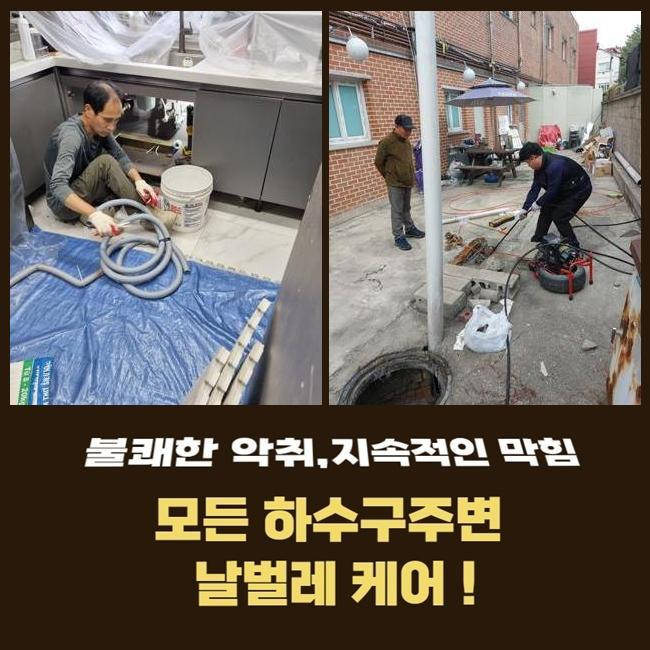
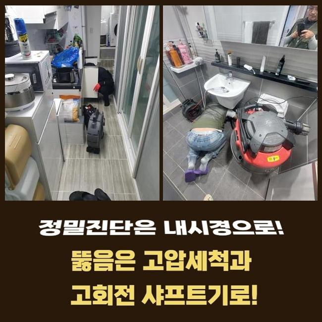
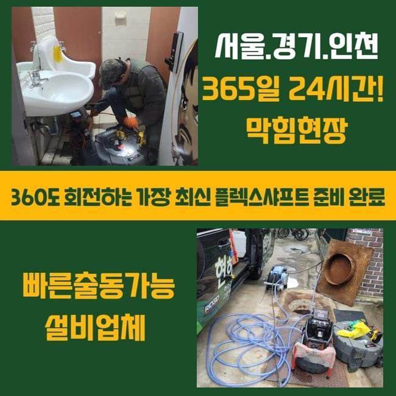
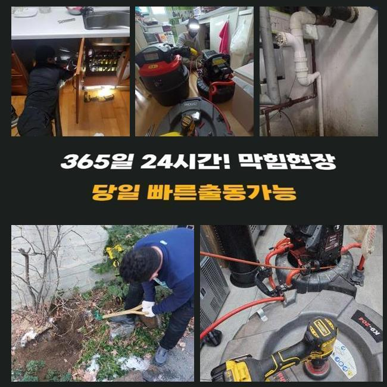
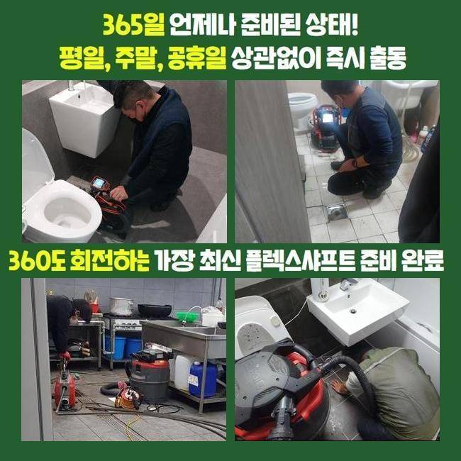
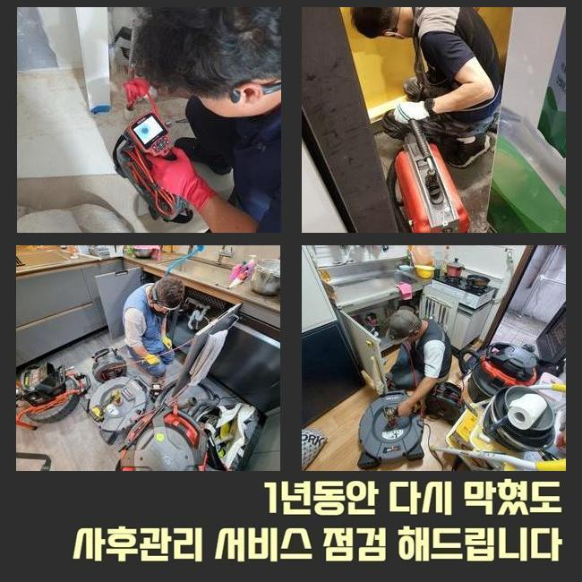

🏠 안산 월피동씽크대역류 반월동 배관내시경카메라 출장수리
안산 싱크대막힘 전문 시공 후기

📋 작업 개요
- 위치: 안산
- 서비스 유형: 싱크대막힘, 하수구막힘, 배관막힘, 맨홀막힘, 역류해결, 뚫는업체, 배관청소, 고압세척
- 작업 일시: 2025. 1. 24. 21:37
- 업체명: 하수구수사대 (010-5615-2118)
🔍 문제 상황
안산 월피동씽크대역류 반월동 배관내시경카메라 출장수리
지역 내의 식당에서 하수구 시설의 막힘으로 당장 가게 오픈을 못한다며 말씀하시면서 얼른 출장와달라고 의뢰 내역을 접수했어요
식음료를 파는 곳이면 하수구 구멍이 봉쇄되는 사건 때문에 당장 물을 운용하지 못하므로 음식 만드는 활동이 어려우니 장사를 할 수가 없겠죠
하수구 통수를 내줘야 장사하시는 분의 손실을 다운시킬 수 있기 때문에 가까운 시일 내에 찾아뵙고 고쳐드리기로 했습니다
현장에 계셨던 고객님은 바닥부에 설치된 배수로에서 물 방출이 이뤄지지 않으며 더 아래에 있는 하수시설의 잔수 역류가 더해진 상황이라고 하셨어요
식당 안에 달려있는 바닥 배수구를 우선은 개선시키고 야외의 배수시스템까지 손봐드릴 필요가 있었기에 복잡한 단계로 나눠지는 작업과정이 필요할 듯 했네요
초기에 현장에 도착하면 전체적으로 현장 상황을 모아서 생각해보고 작업 진행시간에 대해서 예측해보고 시작합니다
관로의 생김새가 독특하거나 막힌 구간이 다수라면 상황에 따라서는 약간 지연될 수 있습니다
야외에 설치된 하수구 속을 체크하고자 가봤더니 맨홀 겉면이 부식이 많이 되어있었고 근처의 바닥까지도 심히 젖어있다보니 더러워져 있었습니다
부식된 곳에 파손이 빚어지지 않도록 집중력을 발휘하여 뚫어야겠다고 다짐하고 관로를 보기 시작했습니다

🔎 원인 분석
💡 전문가 진단: 정밀 진단 장비를 사용하여 슬러지의 고착 여부를 판명하고 타격/세척 작업을 실시했습니다.
배수로 안의 첫인상은 지저분한 오물들이 눈에 들어왔습니다
혼탁한 슬러지 덩어리가 부상해 있는 걸 한눈에 담을 수 있을 수준이었기 때문에 초반부의 정리작업을 실시해서 시야를 확보해야 했습니다
가장 먼저 주방배관부터 찌꺼기를 빼내주고 관로를 보여주는 내시경 기기를 내려보내서 확인하게 되는데요
내외부의 하수관들이 어떤 식으로 결합되어 있는지 확인을 해준 이후에는 고압의 물줄기를 발사해서 진득하게 붙어있는 기름때를 공격해야겠다고 마음을 정했습니다
이 수준에서는 아무리 카메라를 돌려봐도 선명한 내면을 식별하는게 곤란할 것 같아서 석션작업으로 잔수를 빼는 작업을 우선실시해야 했어요
석션장비는 청소기같이 빨아당기는 힘이 강하며 누적된 잔여 오염수와 침전물들을 철저히 바깥으로 투출되도록 하는 것에 목적을 두고 있습니다
흡수하는 힘이 남다르므로 유동성이 있는 대상물은 가볍게 기다란 석션 내에 차곡차곡 쌓입니다
접착성 물질이거나 견고하게 접착된 오물은 삭제시키기 힘들어서 석션 단독 이용으로는 배관을 백프로 고쳐내는 현장들이 많지않은 것이 사실입니다
배관의 사이즈와 상관없이 누락하지 않고 석션 장치를 활용하여 작업할 정도로 배수로 기능을 되돌리는 업무를 위해서는 반드시 최소 한번은 작업 중에 쓴답니다
석션을 돌려서 배관 안을 쾌적하게 조성해두고서 카메라를 안으로 넣어봤어요
내시경을 쓰게 된다면 얽혀있는 형상으로 길고 너비가 넓은 배수관일지언정 구석구석 조사해보며 원인이 된 대상과 하수관의 컨디션에 대해서 분석해 낼 수 있습니다

🔧 작업 과정
이번 현장을 들여다보니 유분이 득실득실한 기름질들이 다수 발견됐습니다
쉽게 없어지지 않는 슬러지가 오늘 다룰 하수구 막힘의 확실한 이유일 것이라는 결론에 이르렀습니다
배수관 마개를 뚫고 폐기된 기름기가 모여서 내부 공간을 채워갔고 이 장애물에 부딪혀서 움직임이 중단되고 턱 막혀버려서 역행을 하게 된겁니다
내부배관을 석션기로 청소를 하는 것도 중요하지만 하수의 종착지인 바깥에 있는 맨홀 안도 보완을 해드려야 했는데요
플렉스 샤프트는 유연한 몸체를 지녔고 말단에 쇠사슬이 장착되어 있는 형상입니다
앞선 석션으로도 여전히 남은 덩어리진 노폐물이라거나 관로에 착 달라붙은 흡착물질을 긁어주거나 파쇄할 수 있습니다
앞서 사용한 샤프트와 석션 파이프를 보는 카메라 역시 활용해야 하자없는 작업이 안정적으로 완성되며 꿈쩍도 하지 않는 배관의 성능을 원상복구할 수 있습니다
상세하게 파이프라인을 들여다보니 관로가 큰 편에 많이 지저분하여 고압세척기를 통한 업무도 필요할 것 같았습니다
샤프트 석션으로 내부정화를 한 덕에 파이프의 움직임이 꽤나 관통됐음이 목격돼서 하수구 고압세척 장치를 안으로 들여보내서 속시원하게 청소해 나갔습니다
높은 압력으로 응축된 물줄기를 내보내주는 노즐의 방향을 잡아주고 이물질의 밀집도가 높은 구역을 심층적으로 치워줬어요
반복적인 업무 덕분에 통로를 가로막던 더러운 슬러지 물질을 타개했습니다
관로의 카메라로 배관 속의 현황에 대해 밑바탕으로 깔아두고 여러 장비를 통한 청소를 통수를 방해하던 장애물들을 삭제시켜야하는 이번 현장에서도 좋은 결과를 만들어냈습니다
오늘의 프로세스를 끝내고 현황이 얼마나 달라졌나 체크하니 전이랑은 딴판으로 지저분한 오염물질들도 너는 사라졌었고 오염됐던 벽면에 있던 기름때들도 떨어져나가서 선명하게 원형 구조가 보이는 걸 감지할 수 있었습니다
배수로 안에 뿌옇게 찰랑대던 물도 완전히 사라지고 장치에 묻던 유해한 물질들이 없어졌습니다
아무래도 음식점과 같은 매장은는 수돗물을 쓰는 양이 기본적으로 최소한 곱절은 많으므로 아무래도 막힘이 생길 경우가 빈발하기는 합니다
음식물 쓰레기는 기본이고 꾸덕한 기름기가 물과 혼입되지 않도록 주방시설을 활용할 때 조심해주셔야 할 부분이 있습니다
육안상으로 개선을 체크했더라도 물을 내려보는 통수검사로 작업이 결함없이 처리되었는지 더블체크를 해보게 됩니다


✅ 작업 완료
집 안에서 물기를 쏟아준 다음에 깨끗하게 닦아낸 야외관로까지 막히는 기색 없이 정상적으로 빠져나가는가를 매의 눈으로 살펴보는 겁니다
쏟아부었던 물기가 맨홀로 세차게 들어오는 것을 눈에 띄었는데요
하수구 기능을 되돌려드리고 고객님께 업무마감을 안내드리고 주변정돈 후 이동했습니다
하수가 제대로 나가지 못하면 쉽게 해결되지 않을까하는 기대로 스스로 뚫어보려다가 파이프 훼손이 일어날 수도 있습니다
막힘 발발 시 바로 전화주신다면 얼른 달려가서 막힘이 생겨난 이유들을 다 제거해드리니 믿고 맡겨주신다면 좋겠습니다



⚠️ 주방 싱크대 배관 막힘 예방 수칙
- ✅ 기름기가 묻은 식기나 프라이팬은 설거지 전 키친타올로 반드시 기름때를 닦아내세요.
- ✅ 주기적으로 싱크대 개수대에 뜨거운 물을 가득 받아 한 번에 내려 배관 내부 기름을 씻어내세요.
- ✅ 배수구 거름망을 미세한 필터로 사용하시고 음식물 찌꺼기가 틈으로 새어 들지 않게 관리하세요.
- ✅ 베이킹소다와 식초를 뜨거운 물과 함께 일주일에 한 번씩 부어주면 배관 살균과 막힘 예방에 좋습니다.
💡 핵심 정리
- 확실한 장비 작업(내시경 점검 및 샤프트 스케일링)으로 원인을 뿌리 뽑습니다.
- 작업 후 1년 이내에 동일한 부위 재발 시 100% 무상 A/S 서비스를 보장합니다.
- 서울 · 경기 · 인천 전 지역에 24시간 언제든 긴급 출동할 수 있도록 항시 대기 중입니다.
❓ 자주 묻는 질문 (FAQ)
🚨 안산 싱크대막힘 문제로 고민이신가요?
정확한 원인 진단과 확실한 시공으로 재발 없는 해결을 약속드립니다.
24시간 긴급 출동 | 서울 · 경기 · 인천 전지역 | 1년 내 재발 시 무상 A/S